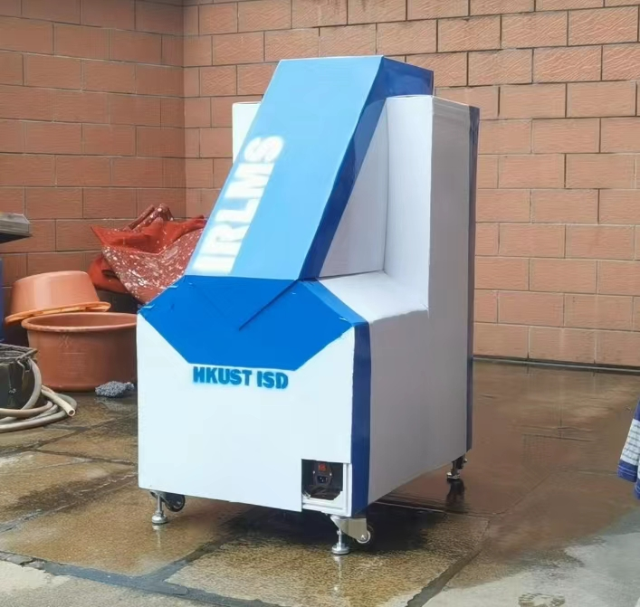
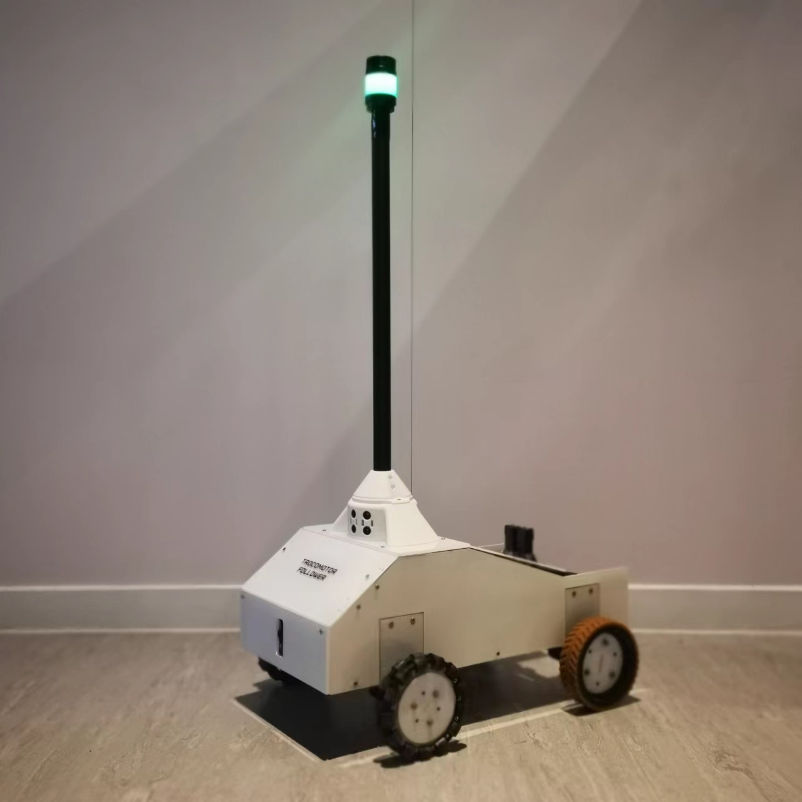
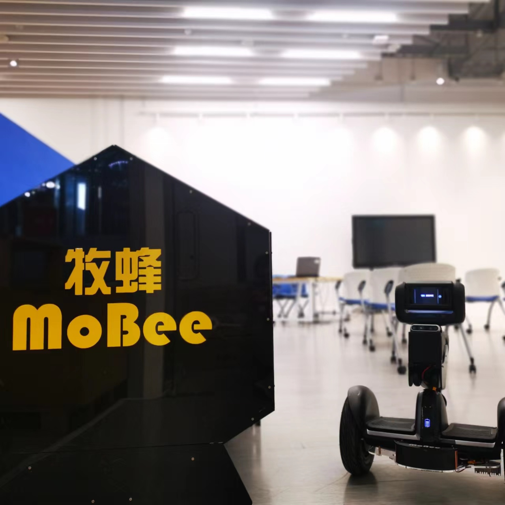

Welcome to my Website!
This is a personal website aims to let you know more about me.
This page listed some of my recent finished or on-going projects.
This page listed some of my recent finished or on-going projects.

IRLMS: Intelligent Real-time Land-movement Monitoring System
This is the 2021-2022 FYP project of ISD. The project found that the existing land-movement monitoring solution in the construction industry is frequently used yet inconvenient. So an Intelligent Real- Time Land-movement Monitoring System (IRLMS) including
two methods, Smart Inclinometer (SInc) method and......
Read more →

Trocomotor Follower: A Part of Auto-Trolley-Hauling System
This is the 2020-2021 Year 3 second semester project of ISD. This project worked with Hong Kong International Airport (HKIA). The project vision a fully autonomous trolley hauling system since during interviews and shadowing,
short of trolley hauling workers was observed. But due to short of time......
Read more →

Mobee: A Self-driving Sharing Personal Mobility System
This is the 2020-2021 Year 3 first semester project of ISD. This project has no industrial partner due to the pandemic. The topic is scoped by the professor which is Personal Mobility. After some interviews and observation
of current sharing transportation, the team thinks that the biggest problem of the......
Read more →